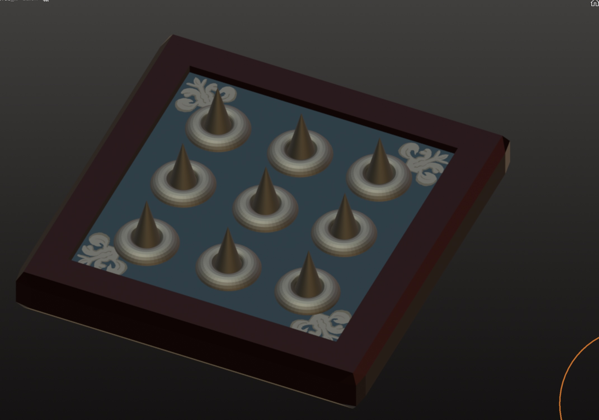
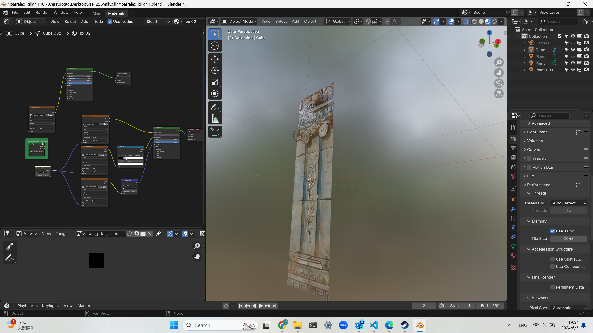

Coco's Week 9 Individual Report
What were your concrete goals for the week?
- Have the textures finished
- Get started working on loading page
What goals were you able to accomplish?
- I actually spent more time working on modeling assets, and there are few left now
- I tried a few different maps with parralax mapping but that didn't seem to make much a difference
- Fixing animations takes time, I have all the animation needed in the game ready, but the main problem is have them loaded into the game


If the week went differently than you had planned, what were the reasons?
- I did a lot of searches on how to have the effects loaded into the game, and that doesn't seem possible, all the resources I could find were telling me that the effects should be done on the engine itself rather than being loaded
- I was trying to figure out the best way to do parralax mapping, and I tried many different ways to create the maps (generating with different algorithms, handdraw, play with photoshop), different ways to link the nodes on blender but still doesn't make much difference, and it must still be rendered on blender and output as an image, which looks different from what I see on blender

What are your specific goals for the next week?
- I will spend day and night finishing everything
What did you learn this week, if anything (and did you expect to learn it?)
- I learnt a lot about animation, different ways to do them and different ways to export. I learnt about depth map generating algorithms, and different ways to create all the maps.
What is your individual morale (which might be different from the overall group morale)?
- I love my group^^, probably the best in my life. Tired but good to see things running! Wish I had more time